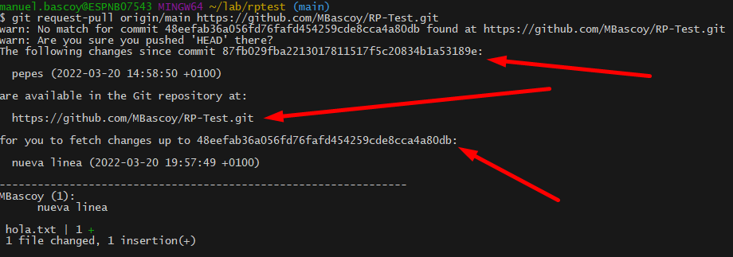

Como utilizar el comando request-pull de git.
El comando request-pull solo sirve para generar un informe para solicitar un pull de cambios que hemos hecho.
El comando solo genera un informe que sale por la salida estandar de la consola, nada mas, no se crea ninguna solicitud tipo PR de GitHub ni nada parecido. El objetivo de este informe es enviárselo a la persona correspondiente para que esté al tanto de los cambios y pueda proceder a hacer un pull de nuestros cambios si ve que todo es correcto.
NOTA: el informe tendríamos que enviarlo mediante e-mail o cualquiera otro medio, git no hace ningún tipo de comunicación en este sentido.
El comando se utiliza de la siguiente forma:
git request-pull <commit> <url_repositorio>
La opción <commit> es el id del commit desde el cual hicimos cambios, el informe por defecto se generará desde ese commit hasta el último commit realizado en nuestra rama local (HEAD), si queremos podemos indicar un segundo commit en el comando para que no tome HEAD como la referencia final y tome un commit anterior.
Como url tendríamos que indicar la url del repositorio donde tenemos almacenados los cambios, para que la persona que reciba el informe sepa cual es la dirección donde puede descargar esos cambios. La persona que vaya a recibir el informe tendrá que hacer un add remote de nuestro repositorio para tener la información de nuestros cambios y poder hacer el pull.
Un ejemplo de informe es el siguiente:
Como se puede ver se indica el commit desde el que se hicieron los cambios, el commit de los últimos cambios (el que queremos que sea mergeado) y la URL del repositorio donde tenemos los cambios.
Despues abajo aparece un resumen de los archivos cambiados, si queremos incluir el código cambiado podemos usar la opción -p y se mostrará el código de igual forma que con el git diff, de todas maneras no es necesario, ya que teniendo el id de los dos commits, la propia persona que reciba el informe puede ejecutar un git diff para ver cuales son todos los cambios.
Git | Request-Pull